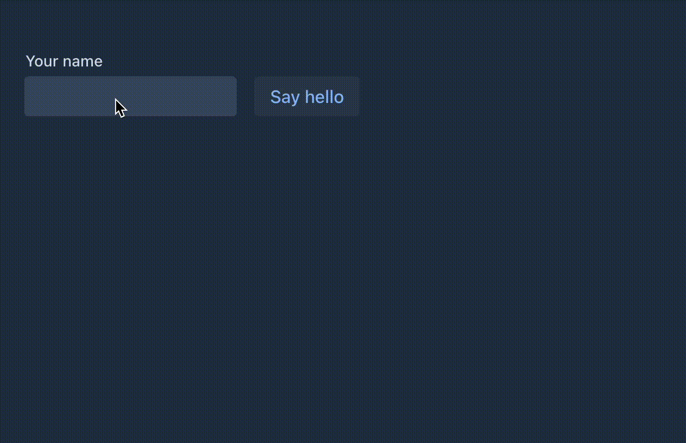

PyFlow
Build Web Apps in Pure Python
3 talks. 3 ideas. 1 project.
Three Talks at Jfokus 2026
Dan North
"Best Simple System for Now"
Focus on the essential. Strip everything else.
Marcus Hellberg
"Full-Stack Web Apps, 100% Java"
Full-stack teams ship quality software faster.
Arun Gupta
"How to Succeed at Vibe Coding"
Run slow to run fast. Specs before code.
Focus on the Essential
Look for the essence of the problem — not what is there, but what should be there.
— Dan North
A complex system that works is invariably found to have evolved from a simple system that worked.
— John Gall
Vaadin Flow & Flow-Components
+6,500
Classes
+550,000
Lines of Code
20+
Years of Evolution
Inside all that complexity... what is the essence?
The Thin Client Secure by Architecture
Zero Attack Surface
No REST APIs to exploit. No GraphQL endpoints. The protocol is opaque.
Minimal Bandwidth
Only UI diffs travel the wire.
No full-page reloads.
No heavy HTML/JS fragments to download.
Server-side State
All validation, all business logic, all data access stay on the server.
Nothing sensitive in the browser.
The Platform
Full-Stack Apps
What if frontend development didn't need to be so difficult?
— Marcus Hellberg
Full-stack teams ship quality software faster.
— Marcus Hellberg
The Language of Today
21% of developers still need to write JS
No server-driven UI
Minimum Viable Product
Java → Python
Java
Python
Ratio: 26:1 in lines of code · 40:1 in files
Hello World
@Route("hello")
class HelloView(VerticalLayout):
def __init__(self):
name = TextField("Your name")
button = Button("Say hello", lambda e:
Notification.show(f"Hello {name.value}"))
self.add(name, button)

7 lines. A complete interactive web view.
49
Enterprise Components

Form fields, grids, dialogs, menus, trees, charts — all from Python
Data Grid
grid = Grid()
grid.add_column("name", header="Name")
.set_sortable(True)
grid.add_column("email", header="Email")
.set_sortable(True)
grid.set_data_provider(self.fetch_page)
def fetch_page(self, offset, limit, sorts):
return db.query(offset, limit), db.count()

Lazy loading, server-side sorting, single callback.
Real-time Push
@AppShell
@Push
class App: pass
async def _tick(self):
while self._running:
await asyncio.sleep(1)
self._elapsed += 1
ui.access(self._update_display)
Server pushes UI updates via WebSocket. No polling.
Spec-Driven Development
Vibe coding generates code based upon your vibe... Spec-driven development generates code based upon your specs.
— Arun Gupta
Teams that prioritize documentation have 30% higher delivery performance.
— State of DevOps Report 2025
The Spec-Driven Loop
The Specs
Language-agnostic. Written for humans and AI agents.
PROTOCOL.md
RPC.md
PITFALLS.md
COMPONENTS.md
IMPLEMENTATION.md
connectors/grid.md
Spec → Code
## UI-TEST-SPECS.md
V24.01 Click Start, label shows "done"
V24.02 Click Multi, counter reaches 3
V24.03 Click Progress, bar reaches 100%
def test_single_push(self, page):
page.locator("#start").click()
expect(page.locator("#push-result")).to_have_text("done")
def test_multiple_push(self, page):
page.locator("#multi").click()
expect(page.locator("#push-count")).to_have_text("3")
def test_progress_bar(self, page):
page.locator("#progress").click()
expect(page.locator("#push-pb")).to_have_js_property("value", 1.0)
Beyond Code
An MVP needs more than just code
Specs
Code
Tests
Logo & Branding
Website & Docs
Presentations
Three Separations
Thinking / Doing
Humans write specs (the "what"). AI generates code (the "how"). Each plays to their strength.
Strategy / Tactics
Specs define architecture decisions. Code is a tactical detail that can be regenerated.
Patterns / Projects
Specs are reusable across languages and projects. Code is a single instance.
The Result: PyFlow
Enterprise Patterns

binder = Binder(Person)
binder.for_field(self.name).bind("name")
binder.for_field(self.email) \
.with_validator(EmailValidator()) \
.bind("email")
@ClientCallable
def save(self):
if binder.write_bean(self.person):
service.save(self.person)
Binder + Validation + @ClientCallable — the enterprise CRUD pattern.
Developer Experience
What's Next
- PWA
- Grid Editor
- Renderers
- More Validators & Converters
- i18n
- Pro Components
The architecture supports it. It's just more of the same loop.
Three Sentences
Find the essence. Build it in one language. Let specs guide AI.
Thank You
pip install git+https://github.com/manolo/pyflow.git
mkdir myapp && cd myapp && mkdir views
pyflow --setup
pyflow --dev --port 8080